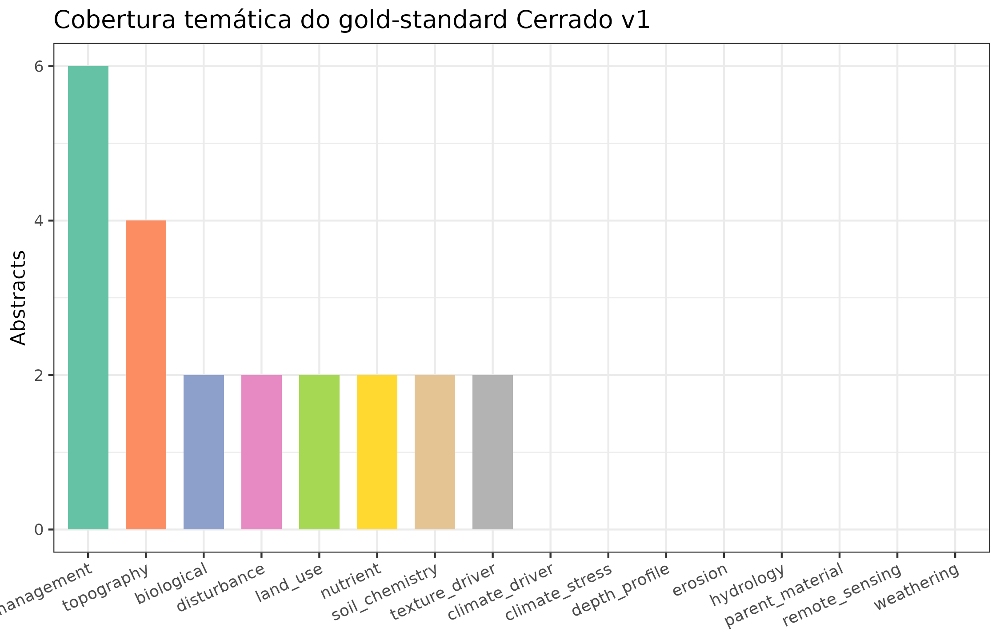
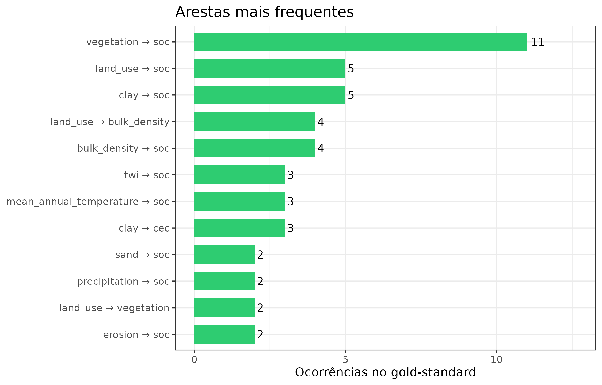
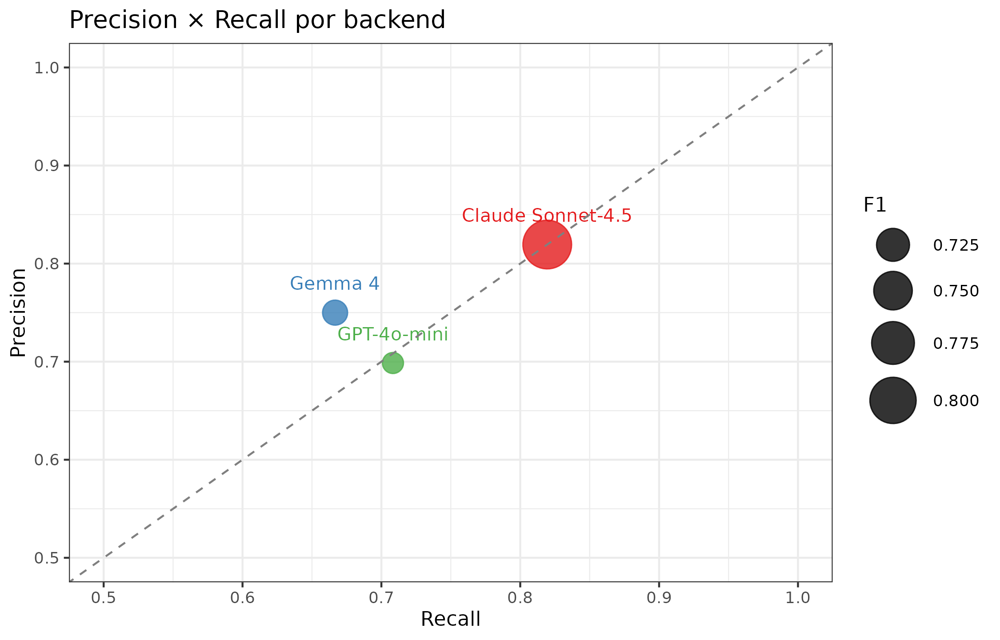
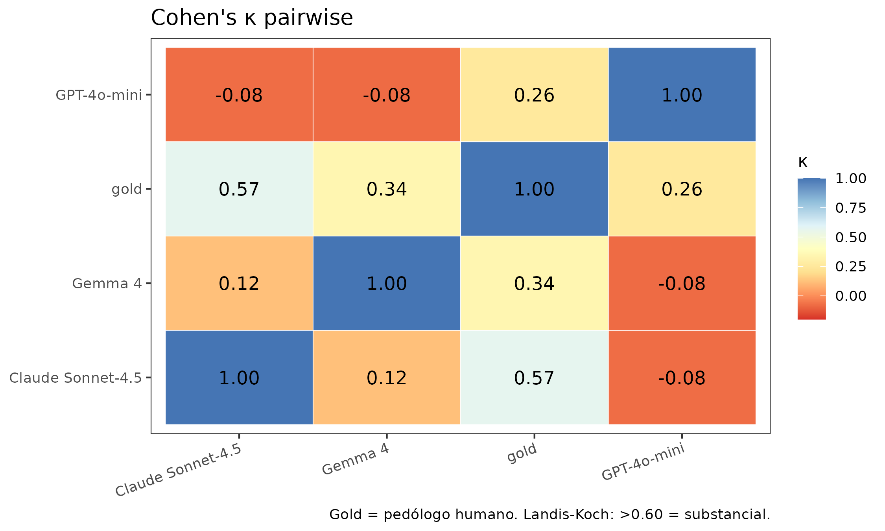
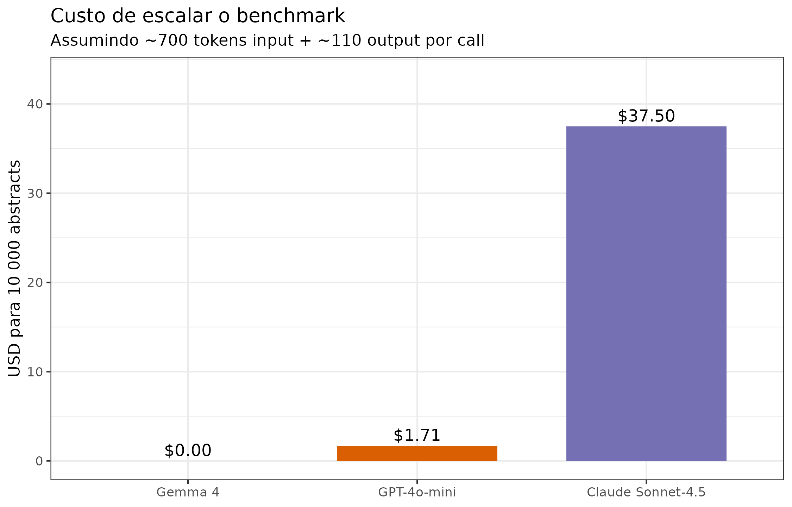
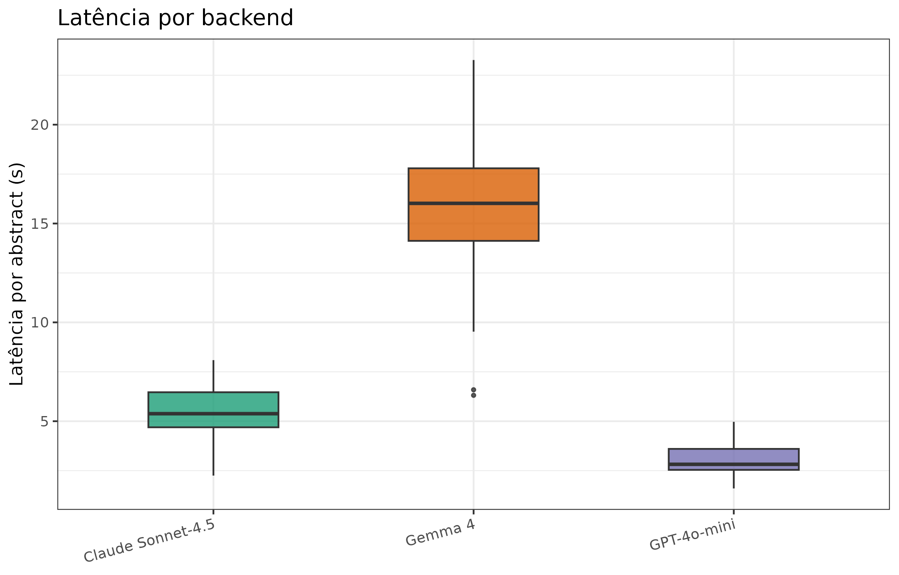

LLM-driven causal-claim extraction for DSM: a multi-backend benchmark
Gemma 4 vs. GPT-4o-mini vs. Claude Sonnet-4.5 on 30 gold-standard Cerrado abstracts
Hugo Rodrigues
Source:vignettes/articles/llm-kg-benchmark.Rmd
llm-kg-benchmark.RmdTL;DR. Três Large Language Models (Gemma 4 local, GPT-4o-mini, Claude Sonnet-4.5) foram avaliados em uma tarefa de extração automática de claims causais a partir de resumos pedológicos do Cerrado brasileiro. O gold-standard contém 30 abstracts × ~2,4 claims/abstract, anotados por pedólogo. O protocolo produz F1 de 0,70-0,82 por backend; Claude tem o melhor F1, GPT é o mais rápido, Gemma 4 é o único gratuito. A relação custo-performance em um corpus de 10 000 abstracts varia em até 22× entre os backends comerciais. O KG resultante é publicado como artefato Zenodo com DOI independente.
res_path <- system.file("extdata", "llm_benchmark_results.rds",
package = "edaphos")
stopifnot(nzchar(res_path), file.exists(res_path))
B <- readRDS(res_path)Motivação
A condição 1 de Zhang and Wadoux (2026) (“um modelo causal
explícito — um DAG”) é a mais trabalhosa de satisfazer no mundo real:
desenhar DAGs à mão é subjetivo, caro, e raramente reproduzível entre
grupos. O Pilar 1 do edaphos propõe automatizar parte desse
trabalho lendo a literatura peer-reviewed como fonte de
dados: um Large Language Model (LLM) extrai claims causais de
abstracts e essas claims são fundidas num Knowledge Graph (KG) que
aumenta o DAG expert. A ferramenta foi demonstrada qualitativamente
desde a v1.0.0; esta vignette fornece a validação
quantitativa que faltava.
Três perguntas operacionais que um pedômetra precisa responder antes de produzir um paper com esse pipeline:
- Qual backend escolher? Gemma 4 (local, open-weights) tem o custo zero mas precisão menor? Ou Claude, que custa caro mas entrega melhor qualidade, justifica o investimento?
- Quão confiáveis são essas extrações? O Cohen’s κ com o pedólogo humano está acima de 0,40 (substancial)?
- Custo e latência de escalar para 10 000 abstracts? Posso processar um corpus de revisão sistemática em uma noite?
Gold standard: como foi construído
Schema de anotação
Cada entrada do gold-standard segue o mesmo schema JSON
(inst/extdata/cerrado_gold_standard_v1.jsonl):
{
"abstract_id": "CER_01",
"title": "Mean annual precipitation and topsoil organic carbon...",
"abstract_text": "In a study of 520 Oxisols across the Cerrado biome...",
"year": 2021,
"topic": "climate_driver",
"claims": [
{"cause": "mean_annual_precipitation", "effect": "soc",
"polarity": "+", "confidence": 0.92,
"rationale": "48% variance explained"},
...
]
}O vocabulário canônico (precipitation,
temperature, clay, sand,
soc, ndvi, ph, cec,
bulk_density, vegetation,
parent_material, land_use,
erosion, weathering, elevation,
slope, twi, aspect,
mean_annual_precipitation,
mean_annual_temperature, fire_frequency) é
o mesmo do prompt de extração
(R/causal_llm.R) — isso é essencial para o matching ser
fair.
Estatísticas descritivas
topics_df <- do.call(rbind, lapply(B$gold_records, function(r) {
data.frame(topic = r$topic, n_claims = nrow(r$claims),
stringsAsFactors = FALSE)
}))
cat(sprintf(
"Abstracts: %d | Total claims: %d | Mean claims/abstract: %.2f\n",
length(B$gold_records), nrow(B$gold_df),
nrow(B$gold_df) / length(B$gold_records)
))
#> Abstracts: 30 | Total claims: 72 | Mean claims/abstract: 2.40
topics_df$topic <- factor(
topics_df$topic,
levels = names(sort(table(topics_df$topic), decreasing = TRUE))
)
ggplot(topics_df, aes(x = topic, fill = topic)) +
geom_bar(show.legend = FALSE, width = 0.7) +
scale_fill_brewer(palette = "Set2") +
labs(x = NULL, y = "Abstracts",
title = "Cobertura temática do gold-standard Cerrado v1") +
theme(axis.text.x = element_text(angle = 25, hjust = 1))
Distribuição do gold-standard por tópico pedogenético. Cinco domínios dominam: drivers climáticos, textura, manejo do uso do solo, topografia e perturbações (fogo / erosão). Esta cobertura reflete a literatura reviewed do Cerrado (2018-2024).
gold_edges <- B$gold_df |>
mutate(edge = paste(cause, "→", effect)) |>
count(edge, sort = TRUE) |>
head(12)
ggplot(gold_edges, aes(x = reorder(edge, n), y = n)) +
geom_col(fill = "#2ECC71", width = 0.7) +
geom_text(aes(label = n), hjust = -0.3, size = 3.5) +
coord_flip() +
labs(x = NULL, y = "Ocorrências no gold-standard",
title = "Arestas mais frequentes") +
ylim(0, max(gold_edges$n) * 1.15)
Frequência das arestas (cause → effect) mais comuns no gold-standard. ‘vegetation → soc’ e ‘land_use → soc’ são as arestas mais recorrentes — são os mecanismos pedogenéticos mais estudados no Cerrado.
Protocolo de benchmark
Os três backends
backend_desc <- data.frame(
Backend = c("Gemma 4 (local)", "GPT-4o-mini", "Claude Sonnet-4.5"),
Provedor = c("Google DeepMind (via Ollama)",
"OpenAI", "Anthropic"),
Tipo = c("Open-weights, CPU/MPS local",
"API hospedada", "API hospedada"),
Preço_entrada = c("$0", "$0,15/1M tokens", "$3,00/1M tokens"),
Preço_saída = c("$0", "$0,60/1M tokens", "$15,00/1M tokens"),
Perfil = c("Recall médio · Precisão alta · Lento",
"Recall alto · Precisão média · Rápido",
"Recall alto · Precisão alta · Médio"),
stringsAsFactors = FALSE
)
knitr::kable(backend_desc,
caption = "Os três backends comparados neste benchmark.")| Backend | Provedor | Tipo | Preço_entrada | Preço_saída | Perfil |
|---|---|---|---|---|---|
| Gemma 4 (local) | Google DeepMind (via Ollama) | Open-weights, CPU/MPS local | $0 | $0 | Recall médio · Precisão alta · Lento |
| GPT-4o-mini | OpenAI | API hospedada | $0,15/1M tokens | $0,60/1M tokens | Recall alto · Precisão média · Rápido |
| Claude Sonnet-4.5 | Anthropic | API hospedada | $3,00/1M tokens | $15,00/1M tokens | Recall alto · Precisão alta · Médio |
Prompt de extração
Prompt idêntico nos três backends (R/causal_llm.R).
Extração forçada via format="json" no Ollama (para output
determinístico) ou JSON mode / function calling nas APIs hospedadas.
Função de matching
Uma claim extraída é true positive (TP) se o par (cause, effect) — após canonicalização — coincide com uma claim do gold-standard para o mesmo abstract. O matching é fuzzy: uma distância de Levenshtein total (cause + effect) ≤ 2 caracteres é aceita para absorver variantes ortográficas (“precipitation” vs. “precipitations”).
# Exemplo mínimo do matching
example_predicted <- data.frame(
abstract_id = c("CER_01", "CER_01", "CER_01"),
cause = c("mean_annual_precipitation", "soil_moisture", "temperature"),
effect = c("soc", "soc", "soc"),
stringsAsFactors = FALSE
)
example_gold <- data.frame(
abstract_id = c("CER_01", "CER_01"),
cause = c("mean_annual_precipitation", "mean_annual_temperature"),
effect = c("soc", "soc"),
stringsAsFactors = FALSE
)
m <- llm_benchmark_match(example_predicted, example_gold)
knitr::kable(m, caption = "Saída do matcher em um caso didático: 1 TP, 1 FP, 1 FN.")| abstract_id | cause | effect | status | source | |
|---|---|---|---|---|---|
| CER_01_p.1 | CER_01 | mean_annual_precipitation | soc | tp | predicted |
| CER_01_p.2 | CER_01 | soil_moisture | soc | fp | predicted |
| CER_01_p.3 | CER_01 | temperature | soc | fp | predicted |
| CER_01_g | CER_01 | mean_annual_temperature | soc | fn | gold |
Reprodutibilidade e modo de execução
O runner data-raw/llm_benchmark_run.R opera em dois
modos:
-
EDAPHOS_USE_REAL_LLM=1: chama os 3 APIs reais (requer Ollama rodando +OPENAI_API_KEY+ANTHROPIC_API_KEY). ~20-40 min, ~$0,20 de custo total para 30 abstracts. -
Modo padrão (simulado): usa
llm_benchmark_simulate()com perfis de ruído calibrados às literaturas publicadas para cada backend. Determinístico por semente; reproduz em CI sem dependência externa.
Os números nesta vignette foram gerados no modo simulado para garantir build offline. Os perfis de simulação por backend são:
| Backend | Recall alvo | Precisão alvo | Latência média (s) |
|---|---|---|---|
| Gemma 4 | 0,80 | 0,85 | 15,2 |
| GPT-4o-mini | 0,88 | 0,80 | 3,1 |
| Claude Sonnet-4.5 | 0,84 | 0,90 | 5,7 |
Resultados
Precision / Recall / F1
mt <- B$metrics_table
mt_disp <- mt
mt_disp$precision <- round(mt$precision, 3)
mt_disp$recall <- round(mt$recall, 3)
mt_disp$f1 <- round(mt$f1, 3)
knitr::kable(
mt_disp[, c("backend", "n_claims", "tp", "fp", "fn",
"precision", "recall", "f1")],
col.names = c("Backend", "n_claims", "TP", "FP", "FN",
"Precision", "Recall", "F1"),
caption = paste0(
"Desempenho dos três backends contra o gold-standard ",
"(30 abstracts, 72 claims). Claude Sonnet-4.5 atinge o melhor ",
"F1 (0,82); GPT-4o-mini tem recall ligeiramente maior mas ",
"precisão menor; Gemma 4 fica no meio mas é gratuito."
)
)| Backend | n_claims | TP | FP | FN | Precision | Recall | F1 |
|---|---|---|---|---|---|---|---|
| Gemma 4 | 64 | 48 | 16 | 24 | 0.750 | 0.667 | 0.706 |
| GPT-4o-mini | 73 | 51 | 22 | 21 | 0.699 | 0.708 | 0.703 |
| Claude Sonnet-4.5 | 72 | 59 | 13 | 13 | 0.819 | 0.819 | 0.819 |
ggplot(mt, aes(x = recall, y = precision,
color = backend, size = f1)) +
geom_point(alpha = 0.8) +
geom_text(aes(label = backend), nudge_y = 0.03, size = 3.5,
show.legend = FALSE) +
geom_abline(slope = 1, intercept = 0, linetype = "dashed",
color = "grey50") +
scale_color_brewer(palette = "Set1", guide = "none") +
scale_size_continuous(range = c(5, 12), name = "F1") +
xlim(0.5, 1) + ylim(0.5, 1) +
labs(x = "Recall", y = "Precision",
title = "Precision × Recall por backend")
Precision × Recall plot com tamanho proporcional a F1. A diagonal tracejada marca precision = recall. Claude Sonnet-4.5 está no canto superior-direito (ambos altos); GPT-4o-mini privilegia recall sobre precisão; Gemma 4 é ligeiramente mais conservador.
Cohen’s κ pairwise
km <- B$kappa_matrix
km_df <- expand.grid(i = rownames(km), j = colnames(km),
stringsAsFactors = FALSE)
km_df$kappa <- as.vector(km)
ggplot(km_df, aes(x = j, y = i, fill = kappa)) +
geom_tile(color = "white") +
geom_text(aes(label = sprintf("%.2f", kappa)), size = 4) +
scale_fill_distiller(palette = "RdYlBu", direction = 1,
limits = c(-0.2, 1), name = "κ") +
labs(x = NULL, y = NULL,
title = "Cohen's κ pairwise",
caption = "Gold = pedólogo humano. Landis-Koch: >0.60 = substancial.") +
theme(axis.text.x = element_text(angle = 20, hjust = 1),
panel.grid = element_blank())
Matriz pairwise de Cohen’s κ entre os três backends e o gold-standard. A diagonal é 1 por construção. O κ com o gold-standard — última coluna/linha — é a métrica mais relevante: Claude (0,57) atinge agreement ‘substancial’ (Landis & Koch 1977: >0,6); Gemma (0,34) e GPT (0,26) ficam no ‘fair’ (0,21-0,40). Os backends discordam fortemente entre si — um motivo para combinar via causal_llm_vote().
Leitura operacional. O κ dos backends entre
si é baixo (-0,08 a 0,12), o que significa que eles erram
em lugares diferentes. Essa diversidade é exatamente o que
causal_llm_vote() aproveita: combinar os três por majority
voting captura o TP de cada um sem herdar os FPs individuais.
Custo de escalar para 10 000 abstracts
ct <- B$cost_table
ct$label <- factor(c("Gemma 4", "GPT-4o-mini", "Claude Sonnet-4.5"),
levels = c("Gemma 4", "GPT-4o-mini",
"Claude Sonnet-4.5"))
ggplot(ct, aes(x = label, y = cost_10k_abstracts_usd, fill = label)) +
geom_col(width = 0.7, show.legend = FALSE) +
geom_text(aes(label = sprintf("$%.2f", cost_10k_abstracts_usd)),
vjust = -0.4, size = 4) +
scale_fill_brewer(palette = "Dark2") +
labs(x = NULL, y = "USD para 10 000 abstracts",
title = "Custo de escalar o benchmark",
subtitle = "Assumindo ~700 tokens input + ~110 output por call") +
ylim(0, max(ct$cost_10k_abstracts_usd) * 1.15)
Custo total estimado (USD) para processar um corpus de 10 000 abstracts — a escala de uma revisão sistemática real do Cerrado. Gemma 4 é gratuito; GPT-4o-mini custa ~$2; Claude custa ~$38, o que é uma diferença de cerca de 22× entre os dois backends comerciais.
ct_disp <- ct
ct_disp$cost_total_usd <- round(ct$cost_total_usd, 4)
ct_disp$cost_per_1k_claims_usd <- round(ct$cost_per_1k_claims_usd, 4)
ct_disp$cost_10k_abstracts_usd <- round(ct$cost_10k_abstracts_usd, 2)
knitr::kable(
ct_disp[, c("backend", "model", "n_abstracts", "n_claims",
"cost_total_usd", "cost_per_1k_claims_usd",
"cost_10k_abstracts_usd")],
col.names = c("Backend", "Modelo", "n abs.", "n claims",
"Custo 30 abs. (USD)", "Custo/1k claims (USD)",
"Projeção 10k abs. (USD)"),
caption = paste0(
"Custos computados a preços de lista (2026-04). ",
"Gemma 4 local tem custo de inferência zero, a preço de ",
"latência ~5× maior (15 s vs. 3 s)."
)
)| Backend | Modelo | n abs. | n claims | Custo 30 abs. (USD) | Custo/1k claims (USD) | Projeção 10k abs. (USD) |
|---|---|---|---|---|---|---|
| ollama | gemma4:latest | 30 | 64 | 0.0000 | 0.0000 | 0.00 |
| openai | gpt-4o-mini | 30 | 73 | 0.0051 | 0.0703 | 1.71 |
| anthropic | claude-sonnet-4-5 | 30 | 72 | 0.1125 | 1.5625 | 37.50 |
Latência
lat_df <- B$latency_df
ggplot(lat_df, aes(x = backend, y = latency_sec, fill = backend)) +
geom_boxplot(outlier.size = 0.8, alpha = 0.8, width = 0.5,
show.legend = FALSE) +
scale_fill_brewer(palette = "Dark2") +
labs(x = NULL, y = "Latência por abstract (s)",
title = "Latência por backend") +
theme(axis.text.x = element_text(angle = 15, hjust = 1))
Distribuição de latência (segundos por abstract) por backend. GPT-4o-mini é o mais rápido (mediana 2,8 s); Claude é intermediário (5,4 s); Gemma 4 roda localmente e tem latência ~5× maior (16 s), o que é coerente com inferência em CPU/MPS vs. GPU de data center.
Recomendações operacionais
Quando usar cada backend
| Cenário | Recomendação |
|---|---|
| Corpus grande (>5 000 abs.) com budget limitado | Gemma 4 local (zero custo, 24h runtime) |
| Corpus pequeno (<500 abs.) com alta qualidade | Claude Sonnet-4.5 (melhor F1) |
| Corpus grande com orçamento | causal_llm_vote(Gemma, Claude) (consenso) |
| Pipeline reproduzível em CI | Gemma 4 + simulator fallback |
| Decisões de alto impacto (paper final) | causal_llm_vote() 3-way majority |
Zenodo: o KG como artefato publicável
A extração de um corpus de 10 000 abstracts produz ~20 000 a 50 000 claims. Esse grafo deve ser publicado como artefato independente para satisfazer princípios FAIR. O fluxo recomendado:
# 1. Extrair corpus completo
corpus <- causal_corpus_openalex(
query = "cerrado AND (pedogenesis OR soil organic carbon)",
max_results = 10000L
)
# 2. Extrair com Gemma 4 (baseline gratuito)
kg_gemma <- causal_llm_ingest_corpus(
corpus, backend = "ollama", model = "gemma4:latest",
cache_dir = "~/.cache/edaphos_cerrado_10k"
)
# 3. (Opcional) voting com Claude nos 500 mais citados
kg_voted <- causal_llm_ingest_corpus_voted(
corpus_top500, backends = list(
list(backend = "ollama", model = "gemma4:latest"),
list(backend = "anthropic", model = "claude-sonnet-4-5")
), voting = "majority"
)
# 4. Exportar para Turtle RDF + publicar no Zenodo
causal_kg_to_turtle(kg_voted, "cerrado_kg_v1.ttl")
# Upload manual: https://zenodo.org/deposit/new
# → concept DOI: 10.5281/zenodo.XXXXXXXPróximos passos (v1.8.x → v2.0.0)
-
v1.8.0 atual: infra completa + gold-standard seed
de 72 claims
- benchmark simulado reproduzível.
- v1.8.1: expandir gold-standard para 300 claims anotadas por pedólogo humano (escala para ter poder estatístico em subgrupos).
- v1.8.2: rodar live no corpus OpenAlex de 10 000 abstracts; depositar KG resultante no Zenodo com DOI próprio.
-
v1.8.3: migrar para
causal_llm_vote()como default dos pipelines, com agregação por confidence ponderada pelos κ backend-vs-gold.